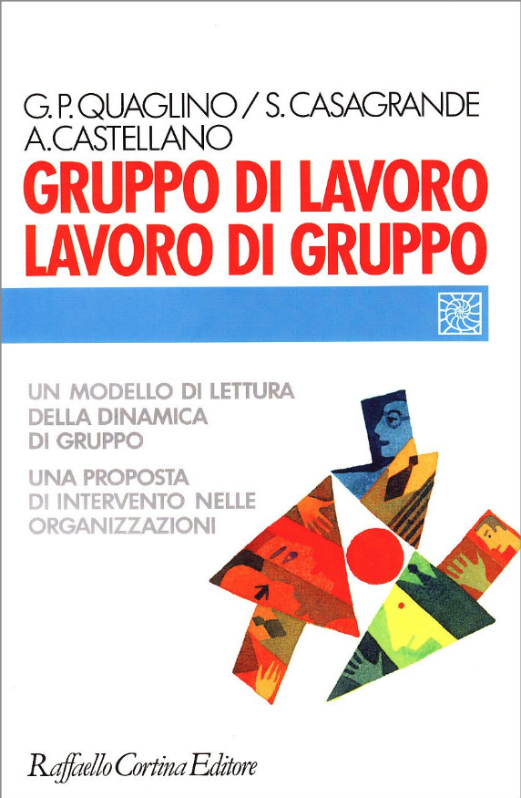
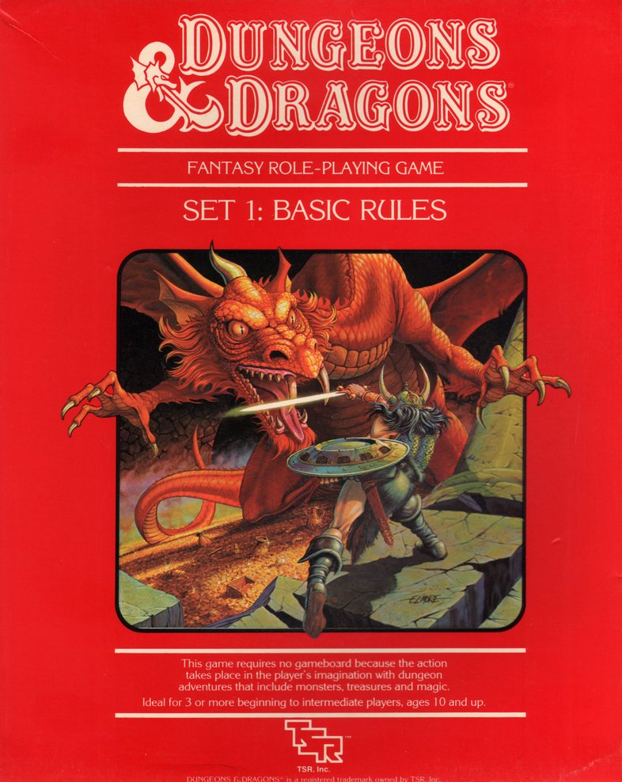
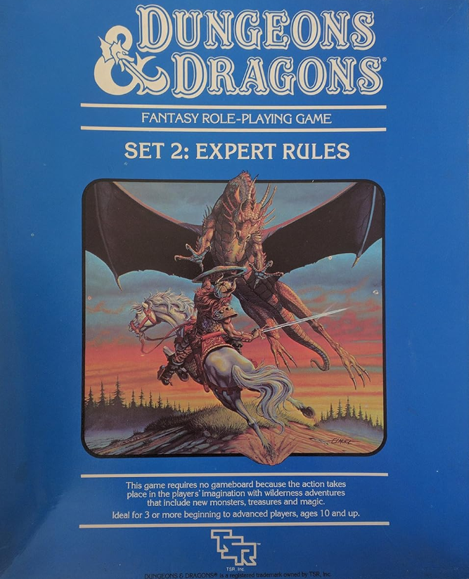
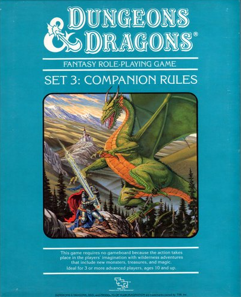
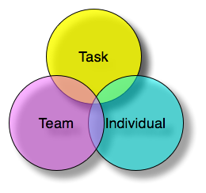

Understanding teams with
Dungeon & Dragons
Maurizio Lupo


Teams vs individuals:
- productivity
- reliability / resilience
- innovation
- sense of belonging and happiness
What is a team?
A group of individuals is not a team.
They can become a team.
If they have a common GOAL
What is your team goal?
Try writing it down!
The goal should be:
- 🗹 discussed within the team
- 🗹 explicit rather than implicit
- 🗹 compatible with organisation goal
- 🗹 supported by the organisation
- 🗹 measurable
- 🗹 doable

D&D classes and team roles
Roles cover these areas:
- Result
- Methodology
- Innovation
- Communication
What areas are covered by your team members?
For example:
- Me (Result, Methodology)
- Beren the half orc (Communication)
- Oz the powerful (Innovation)
- ...
Issues around roles:
- missing key areas
- leader-does-all
- member without role

Team characteristics
Rate your team from 1 to 10!
Openess
How neat are the boundaries of the team?
Cohesion
Do we share the same norms and values ?
Interdependence
How much we depend from each other?
Fragmentation
Can we recognise subgroups in the team?
Specialisation
Are we able to cover all necessary functions?
Integration
Do we accept each other ideas?
Balance is key
Institutional leadership
vs
Functional leadership
Institutional leader
Functional leader

Do you recognise functional leaders in your team?